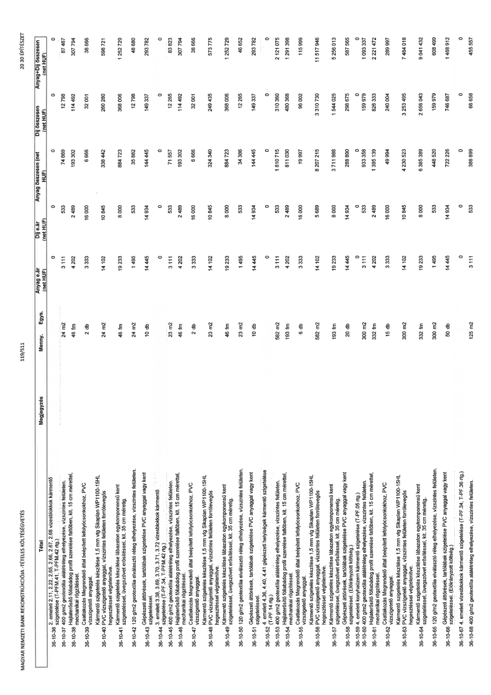

| Tétel | Megjegyzés | Menny. | Egys. | Anyag e.ár (net HUF) | Díj e.ár (net HUF) | Anyag összesen (net HUF) | Díj összesen (net HUF) | Anyag+Díj összesen (net HUF) |
|---|---|---|---|---|---|---|---|---|
| 36-10-36 | 2. emeleti 2.11, 2.22, 2.55, 2.66, 2.67, 2.68 vizesblokkok kármento szigetelése (T-PFM.41, T-PFM.42 rtg.) | NaN | NaN | 0 | 0 | 0 | 0 | 0 |
| 36-10-37 | 400 g/m2 geotextília alátétréteg elhelyezése, vízszintes felületen. | NaN | 24 m2 | 3 111 | 533 | 74 669 | 12 798 | 87 467 |
| 36-10-38 | Hajlaterosíto fóliabádog profil szerelése falfödben, kit. 15 cm mérettel, mechanikai rögzítéssel. | NaN | 46 fm | 4 202 | 2 489 | 193 302 | 114 492 | 307 794 |
| 36-10-39 | Csatlakozás Megrendelo által beépített lefolyócsonkokhoz, PVC vízszigetelo anyaggal. | NaN | 2 db | 3 333 | 16 000 | 6 666 | 32 001 | 38 666 |
| 36-10-40 | Kármento szigetelés készítése 1,5 mm vtg Sikaplan WP1100-15HL PVC vízszigetelo anyaggal, vízszintes felületen forrólevegos hegesztéssel végtelenítve. | NaN | 24 m2 | 14 102 | 10 845 | 338 442 | 260 280 | 598 721 |
| 36-10-41 | Kármento szigetelés készítése lábazaton egykomponensu kent szigeteléssel, üvegszövet erosítéssel, kit. 35 cm méretig. | NaN | 46 fm | 19 233 | 8 000 | 884 723 | 368 006 | 1 252 729 |
| 36-10-42 | 120 g/m2 geotextília elválasztó réteg elhelyezése, vízszintes felületen. | NaN | 24 m2 | 1 495 | 533 | 35 882 | 12 798 | 48 680 |
| 36-10-43 | Gépészeti áttörések, tartólábak szigetelése PVC anyaggal vagy kent szigeteléssel. | NaN | 10 db | 14 445 | 14 934 | 144 445 | 149 337 | 293 782 |
| 36-10-44 | 3. emeleti 3.38, 3.69, 3.70, 3.71, 3.72 vizesblokkok kármento szigetelése (T-PF.34, T-PFM.42 rtg.) | NaN | NaN | 0 | 0 | 0 | 0 | 0 |
| 36-10-45 | 400 g/m2 geotextília alátétréteg elhelyezése, vízszintes felületen. | NaN | 23 m2 | 3 111 | 533 | 71 557 | 12 265 | 83 823 |
| 36-10-46 | Hajlaterosíto fóliabádog profil szerelése falfödben, kit. 15 cm mérettel, mechanikai rögzítéssel. | NaN | 46 fm | 4 202 | 2 489 | 193 302 | 114 492 | 307 794 |
| 36-10-47 | Csatlakozás Megrendelo által beépített lefolyócsonkokhoz, PVC vízszigetelo anyaggal. | NaN | 2 db | 3 333 | 16 000 | 6 666 | 32 001 | 38 666 |
| 36-10-48 | Kármento szigetelés készítése 1,5 mm vtg Sikaplan WP1100-15HL PVC vízszigetelo anyaggal, vízszintes felületen forrólevegos hegesztéssel végtelenítve. | NaN | 23 m2 | 14 102 | 10 845 | 324 340 | 249 435 | 573 775 |
| 36-10-49 | Kármento szigetelés készítése lábazaton egykomponensu kent szigeteléssel, üvegszövet erosítéssel, kit. 35 cm méretig. | NaN | 46 fm | 19 233 | 8 000 | 884 723 | 368 006 | 1 252 729 |
| 36-10-50 | 120 g/m2 geotextília elválasztó réteg elhelyezése, vízszintes felületen. | NaN | 23 m2 | 1 495 | 533 | 34 386 | 12 265 | 46 652 |
| 36-10-51 | Gépészeti áttörések, tartólábak szigetelése PVC anyaggal vagy kent szigeteléssel. | NaN | 10 db | 14 445 | 14 934 | 144 445 | 149 337 | 293 782 |
| 36-10-52 | 4. emeleti 4.36, 4.40, 4.41 gépészeti helyiségek kármento szigetelése (T-PF.14 rtg.) | NaN | NaN | 0 | 0 | 0 | 0 | 0 |
| 36-10-53 | 400 g/m2 geotextília alátétréteg elhelyezése, vízszintes felületen. | NaN | 582 m2 | 3 111 | 533 | 1 810 715 | 310 360 | 2 121 075 |
| 36-10-54 | Hajlaterosíto fóliabádog profil szerelése falfödben, kit. 15 cm mérettel, mechanikai rögzítéssel. | NaN | 193 fm | 4 202 | 2 489 | 811 030 | 480 368 | 1 291 398 |
| 36-10-55 | Csatlakozás Megrendelo által beépített lefolyócsonkokhoz, PVC vízszigetelo anyaggal. | NaN | 6 db | 3 333 | 16 000 | 19 997 | 96 002 | 115 999 |
| 36-10-56 | Kármento szigetelés készítése 1,5 mm vtg Sikaplan WP1100-15HL PVC vízszigetelo anyaggal, vízszintes felületen forrólevegos hegesztéssel végtelenítve. | NaN | 582 m2 | 14 102 | 5 689 | 8 207 215 | 3 310 730 | 11 517 946 |
| 36-10-57 | Kármento szigetelés készítése lábazaton egykomponensu kent szigeteléssel, üvegszövet erosítéssel, kit. 35 cm méretig. | NaN | 193 fm | 19 233 | 8 000 | 3 711 988 | 1 544 025 | 5 256 013 |
| 36-10-58 | Gépészeti áttörések, tartólábak szigetelése PVC anyaggal vagy kent szigeteléssel. (Eloirányzott költség.) | NaN | 20 db | 14 445 | 14 934 | 288 890 | 298 675 | 587 565 |
| 36-10-59 | 4. emeleti konyhaüzem kármento szigetelése (T-PF.05 rtg.) | NaN | NaN | 0 | 0 | 0 | 0 | 0 |
| 36-10-60 | 400 g/m2 geotextília alátétréteg elhelyezése, vízszintes felületen. | NaN | 300 m2 | 3 111 | 533 | 933 358 | 159 979 | 1 093 337 |
| 36-10-61 | Hajlaterosíto fóliabádog profil szerelése falfödben, kit. 15 cm mérettel, mechanikai rögzítéssel. | NaN | 332 fm | 4 202 | 2 489 | 1 395 139 | 826 333 | 2 221 472 |
| 36-10-62 | Csatlakozás Megrendelo által beépített lefolyócsonkokhoz, PVC vízszigetelo anyaggal. | NaN | 15 db | 3 333 | 16 000 | 49 994 | 240 004 | 289 997 |
| 36-10-63 | Kármento szigetelés készítése 1,5 mm vtg Sikaplan WP1100-15HL PVC vízszigetelo anyaggal, vízszintes felületen forrólevegos hegesztéssel végtelenítve. | NaN | 300 m2 | 14 102 | 10 845 | 4 230 523 | 3 253 495 | 7 484 018 |
| 36-10-64 | Kármento szigetelés készítése lábazaton egykomponensu kent szigeteléssel, üvegszövet erosítéssel, kit. 35 cm méretig. | NaN | 332 fm | 19 233 | 8 000 | 6 385 389 | 2 656 043 | 9 041 432 |
| 36-10-65 | 120 g/m2 geotextília elválasztó réteg elhelyezése, vízszintes felületen. | NaN | 300 m2 | 1 495 | 533 | 448 520 | 159 979 | 608 499 |
| 36-10-66 | Gépészeti áttörések, tartólábak szigetelése PVC anyaggal vagy kent szigeteléssel. (Eloirányzott költség.) | NaN | 50 db | 14 445 | 14 934 | 722 226 | 746 687 | 1 468 912 |
| 36-10-67 | 4. emeleti vizesblokkok kármento szigetelése (T-PF.34, T-PF.36 rtg.) | NaN | NaN | 0 | 0 | 0 | 0 | 0 |
| 36-10-68 | 400 g/m2 geotextília alátétréteg elhelyezése, vízszintes felületen. | NaN | 125 m2 | 3 111 | 533 | 388 899 | 66 658 | 455 557 |
